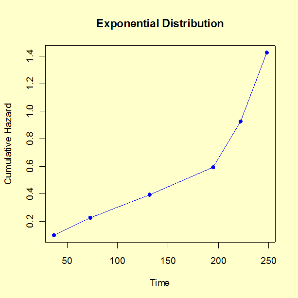
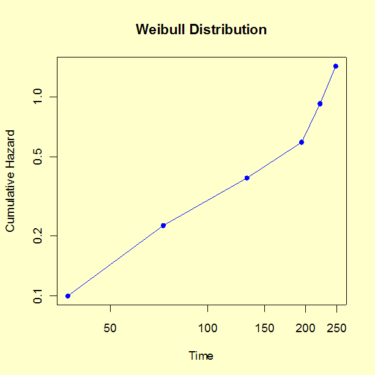

8.
Assessing Product Reliability
8.2.
Assumptions/Prerequisites
8.2.2.
How do you plot reliability data?
8.2.2.2.
|
Hazard and cumulative hazard plotting
|
|
|
Cumulative Hazard Plotting has the same purpose as probability
plotting
|
Similar to probability plots, cumulative hazard plots are used for
visually examining distributional model assumptions for reliability
data and have a similar interpretation as probability plots.
The cumulative hazard plot consists of a plot of the
cumulative hazard \(H(t_i)\)
versus the time \(t_i\)
of the \(i\)-th
failure.
As with probability plots, the plotting positions are calculated
independently of the model and a reasonable straight-line
fit to the points confirms that the chosen model and the
data are consistent.
Advantages of Cumulative Hazard Plotting
-
It is much easier to calculate plotting positions for multicensored data
using cumulative hazard plotting techniques.
-
The most common reliability distributions, the exponential and the Weibull,
are easily plotted.
Disadvantages of Cumulative Hazard Plotting
-
It is less intuitively clear just what is being plotted. In a probability plot,
the cumulative percent failed is meaningful and the resulting straight-line
fit can be used to identify times when desired percentages of the population
will have failed. The percent cumulative hazard can increase beyond 100 % and is
harder to interpret.
-
Normal cumulative hazard plotting techniques require exact times of failure and
running times.
-
Since computers are able to calculate K-M estimates
for probability plotting, the main advantage of cumulative hazard plotting goes
away.
Since probability plots are generally more useful, we will only give a
brief description of hazard plotting.
How to Make Cumulative Hazard Plots
-
Order the failure times and running times for each of the \(n\)
units on test in ascending order from 1 to \(n\)
The order is called the rank of the unit. Calculate the
reverse rank for each unit (reverse rank = \(n - \mbox{rank} + 1\)).
-
Calculate a hazard "value" for every failed unit (do this only for the
failed units). The hazard value for the failed unit with reverse rank \(k\)
is just \(1/k\).
-
Calculate the cumulative hazard values for each failed unit. The cumulative
hazard value corresponding to a particular failed unit is the sum of all
the hazard values for failed units with ranks up to and including that
failed unit.
-
Plot the time of failure versus the cumulative hazard value. Linear
\(x\) and \(y\)
scales are appropriate for an exponential distribution, while
a log-log scale is appropriate for a Weibull distribution.
|
|
A life test cumulative hazard plotting example
|
Example: Ten units were tested at high
stress test for up to 250 hours. Six failures occurred at 37, 73, 132,
195, 222 and 248 hours. Four units were taken off test without failing
at the following run times: 50, 100, 200 and 250 hours. Cumulative hazard
values were computed in the following table.
(1)
Time of Event
|
(2)
1= failure
0=runtime
|
(3)
Rank
|
(4)
Reverse Rank
|
(5)
Haz Val
(2) x 1/(4)
|
(6)
Cum Hazard Value
|
|
37
|
1
|
1
|
10
|
1/10
|
.10
|
|
50
|
0
|
2
|
9
|
|
|
|
73
|
1
|
3
|
8
|
1/8
|
.225
|
|
100
|
0
|
4
|
7
|
|
|
|
132
|
1
|
5
|
6
|
1/6
|
.391
|
|
195
|
1
|
6
|
5
|
1/5
|
.591
|
|
200
|
0
|
7
|
4
|
|
|
|
222
|
1
|
8
|
3
|
1/3
|
.924
|
|
248
|
1
|
9
|
2
|
1/2
|
1.424
|
|
250
|
0
|
10
|
1
|
|
|
Next ignore the rows with no cumulative hazard value and plot column (1) vs
column (6).
|
|
Plots of example data
|
Exponential
and
Weibull Cumulative Hazard Plots
The cumulative hazard for the
exponential distribution
is just \(H(t) = \alpha t\),
which is linear in \(t\)
with an intercept of zero. So a simple linear graph of \(y\)
= column (6) versus \(x\)
= column (1)
should line up as approximately a straight line going through
the origin with slope \(\lambda\)
if the exponential model is appropriate.
The cumulative hazard plot for exponential distribution is shown below.

The cumulative hazard for the Weibull
distribution is \(H(t) = (t/\alpha)^\gamma\),
so a plot of \(y\) versus \(x\)
on a log-log scale should resemble a straight line with slope \(\gamma\)
if the Weibull model is appropriate. The cumulative
hazard plot for the Weibull distribution is shown below.

A least-squares regression fit of the data (using base 10 logarithms to transform
columns (1) and (6)) indicates that the estimated slope for the Weibull
distribution is 1.27, which is fairly similar to the exponential model slope of 1.
The Weibull fit looks somewhat better than the exponential fit; however, with a sample
of just 10, and only 6 failures, it is difficult to pick a model from the
data alone.
|
|
Software |
The analyses in this section can can be implemented using both
Dataplot code and R code.
|